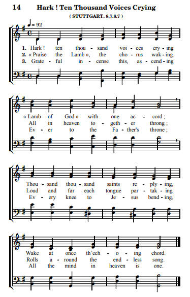

|
|
|
|
1
|
父阿，兒女稱頌你名，
|
|
 https://www.cantiquest.org/SSO/SSO_014-Hark_Ten_Thousand_Voices_Crying_PHSS.pdf |
|
|
|
|

CH0044 大本诗歌第 44 首 [父阿，儿女称颂你名] https://www.youtube.com/watch?v=JXqlstPrIRs - 选本诗歌 130父啊儿女称颂你名
https://www.youtube.com/watch?v=xBw3bU3m9Ic&t=42s
-
Father, Thy name our souls would bless https://www.youtube.com/watch?v=A5o_N65FpZo
父阿，兒女稱頌你名 720敬拜父 作者：達秘 ( J.N. Darby 1800 – 1882)
https://blog.xuite.net/w3817939/hymn/27158609
簡介:
自從十八歲，他就開始注意到屬靈的事情。現在既然已經得救，心中的天良就開始對於法律的業務發生異議。過了一年，他完全放棄了操律師業務的思想。這件事使他父親非常懊惱，也使許多朋友十分失望；而最失望的人便是後來任愛爾蘭最高法院院長的姐夫，因為他不只盼望達秘升到法律界最高的地位，還希望達秘用他敏銳而善於歸納的天才，來整理英國法律上的紛亂。
在達秘的經歷�堙A那一線的光輝，照亮了他七年的黑夜，最後引導他進入光天化日之下。他被帶到與神和好的知識�堙A他的心中充滿了神救恩的喜樂。他聽見了呼召，他看見了那只呼召他的手。不像福音書上的那個青年的財主，犯了嚴重的錯誤，拒絕了呼召，憂憂愁愁的走了；達秘也是一個青年，而且有那樣的地位，和驚人的才華，但他用輕快的心情捨棄了一切，起來要認識主，願意出任何代價來跟隨主。
他歡然拋棄了律師的業務，盼望找到一條道路，能夠事奉神。他在一八二五年申請加入愛爾蘭教會的執事班(Deacon Order)，立刻得到了准許。在他基督徒的道路上，他還有很長的路要走，尚有許多的功課要學習。他後來回憶的時候，能夠像亞伯拉罕的僕人一樣的說：“至於我，耶和華在路上引領我，直走到我主人的兄弟家�堙C”(創 24:27)
一八二七年，達秘在都柏林城�媢J見幾位青年和他一樣，對於他們和教會的關係發生嚴重的懷疑。他們的難處大多是起因於當時國教和非國教團體的生硬宗派思想。當這位大夢初醒的青年牧師來到都柏林之時，他最少找到四位這樣的朋友，預備採取當時所認為勇敢的步驟。經過謹慎的考慮，和默想新約聖經，他們發現在國教或者任何非國教的團體�堙A都找不到神教會的具體表現。要參加那些非國教的團體，必須口吐他們特殊的“示播列”(士 12:6)，同時他們的憲章也實在從無一刻考慮到在地上基督身體的偉大並聖潔的性質。
他們採取的勇敢步驟，就是在主日早晨一同聚集擘餅，如同早期基督徒所做的，“七日的第一日，我們聚會擘餅”(徒 20:7)。今天我們也許覺得這個舉動並無什麼了不得，因為弟兄運動早已影響整個基督教；可是當時，這種行動是具有革命性的，在所謂正宗的教會團體內從未見過。
當時聚集在赫契生家�媕撒瑼漱郎魽A乃是柏勒(J.G.Bellett)、克羅寧(Dr.Cronin)、赫契生(Mr.Hutchinson)、柏路克(Mr.Brook)和達秘。他們脫去了人為宗教制度的墓衣，走上敬拜和事奉的自由大道，有主的靈來帶領主持一切。他們所以採取行動，是因為考慮到在馬太福音十八章二十節、羅馬書十二章，和以弗所書三章四節的真理。他們發現且承認信徒在世的抱負，乃在用心靈誠實來敬拜父，直接向主負責事奉，並且等候主再來(約4:23-24；西3:23-24)。達秘辭去牧師職分之後，非常明白的表示他並未辭去神話語的職事，也未推辭拯救靈魂的責任。如同前個世紀著名的約翰·衛斯理一樣，他現在以整個世界作為他的教區。他為主多受勞苦，不倦的旅行各地幫助信徒，傳揚主的福音。他說：“我到劍橋和牛津去……去瑞士不只一次……留在洛桑(Lausanne)一段相當長的時期，神作工使人得救，並且呼召他一班的兒女從世界�堶惜嬪O出來…”這些地名不過是他在一封信內所提起的。只要讀他三封書信，就可以看出他當時旅行的廣泛。
達秘很少知己的朋友。他那向著主的熱誠和堅決，拒絕一般人所渴望的東西，使他專心事奉主，無暇顧到其他的事。在許多方面，他是個孤單的人，有時他也會感覺到這點，可是他從不後悔。當他七十九歲高齡時，他在黑夜回聲(Echo of Songs in the Night)的詩集�堙A發表他的情緒說：“哦，與我同住；不容任何擾亂思想，強佔蔽遮屬天亮光。禰是我力量！不讓禰所帶來的，被天然興趣驅逐。”
當達秘說：“基督是我生命中的惟一目的，因我活著就是基督。”他的性格，行為和談吐都證明這句並非平凡的話，而是單純的真理。某次在義大利旅行之時，他年已古稀，住在一所極不舒服的旅館�媢L夜。他疲乏困倦，倚首雙手內，輕聲的說：“我今撇下一切事情，背起十架跟隨耶穌。”
他雖不尋求朋友，人卻被他的高尚人格和捨棄世界所吸引。費爾博(J.C.Philpot)就是其中之一。他們是在愛爾蘭達秘的姐夫家�媢J見的。費爾博對於達秘的“黑夜”經歷，感覺非常有趣。他能懂得達秘的苦痛，因為他是個極端喀爾文派，可是他不明白達秘後來所得著的完全拯救，與神和好，並永遠得救的把握。在他主筆的《福音標準》(Gospel Standard)上，他發表對於老友的印象說：“達秘慷慨浪費他的資產，他有超過殉道者的勇氣。”達秘的著作浩瀚，他所寫的都值得閱讀，可惜不甚容易瞭解。
他有高貴可愛的品格。對於真理始終如一，毫不虛飾。當然像他這樣的人必是多受艱難，然而他樂於忍受，從無怨言。他活在一個不平凡的時代，當時英國宗教生活的根基正受到嚴重的考驗。高等批評學，進化論，和其他各種異端，搖動了許多人的信心。他自然不能袖手旁觀，因此就投入戰火，為那一次交付聖徒的真道，竭力爭辯。
他最著名的工作，乃是將全部聖經譯成德文和法文，並將希臘文新約譯成英文(Translation of the Holy Scriptures)。他參考各種古本原稿，重新翻譯。後來修正聖經欽訂本的人，參考他的新的譯本，希奇他研究的透徹和工作的浩大。當他翻譯的時候，他常犧牲文學的雅麗而保存原意的正確，因此他的譯筆有些奇特。但是那些難能可貴的注解當可補償這些缺點。
從他二十八歲開始，直到八十二歲離世，他不斷的寫作，牽述到聖經的各種問題，表現屬靈的成熟。他拆穿各種異端邪說。但是他最高貴的著作，乃是《聖經各卷要略》(Synopsis of Books of the Bible)。此外尚有關於佈道性、實行性、宗教性、預言性、雜錄性和其他性質的許多著作。雖然依照題目的不同，而深淺不一，可是凡他所寫的書都印了向著基督的忠誠，和向著神話語的信心。他完全不顧文學上的榮譽。他曾建議“用聖經來思想”。
有一本小冊，叫做《屬靈詩歌》(Spiritual Songs)，內有二十六首寶貴的詩，系出於達秘之手。其中有一首〈無終之歌〉，是最得人心的。那是他在一八三五年寫的，當他經過長期嚴重的疾病，眼患痛風疹，睡在暗房床上，他用口傳說這首詩。詩竟充滿高興讚美，完全看不出他正在病痛中。這可代表他的心靈平靜情形。詩是這樣說：“聽阿，千萬聲音雷鳴，同聲高舉神羔羊；千千萬萬立即回應，和聲爆發勢無量。……這樣感激心香如縷，永向父的寶座去；萬膝莫不向子屈曲，天上心意真一律……。”
不斷的在各處旅行，生活又無平常的舒適，開始在這老戰士鐵煉的肉身上產生惡果。在一八八一年上半年，他提起一次在蘇格蘭鄧地(Dundee)跌倒受傷極重。那次跌倒受傷比起他當時所想像的還嚴重，大大影響了他的心臟和肺部。他已經超過了八十歲的高齡。他的奔曆似乎反而加速，因為在一八八○年他還風塵僕僕，探望歐洲大陸上的各地教會。然而這個“瓦器”開始破裂。當時他寫信給他一位朋友說：“我並未生病，只是疲倦和工作過度。我早晨和下午竭力工作，到了晚間就放鬆筋骨，專心閱讀神的話語，以他的愛為糧食。”
有一段時期他晚上不能躺下休息，只有坐在床上才能得些睡眠。他說：“我的身體情形十分低落，在鄧地那次跌倒抖散了我，過於我所想像的。我的心臟和肺部是我的弱點。但是這些猶如身體的其他部分，都在主的手�堙C昨晚我甚至坐起。”
一八八二年三月間，他被送到波尼摩(Bournemouth)一位朋友漢門(H.A.Hammand)的家�媥i病。將近二月之久，他彌留在本仁約翰所稱之巴拉地(Beulah Land——即流奶與蜜之地)。據說他每日都在主�媗w樂。提起教會為著教會和合一的見證不斷禱告。當吳司敦(Dr.Christopher Wolston)問他，面迎死亡，有何特別感觸，他答說，“有三件事我時常思想：—、神是我的父，我是他送給他兒子的禮物；二、基督是我的義；三、基督是我生活的目的，又是我永世的喜樂。”這是在三月九日所說的。另有一次，他說：“縱在極軟弱之中，我能夠說我已為基督而活，在我和父之間全無黑雲。”
他最後一封致弟兄們的信是典型的，值得思念：“我親愛的弟兄們，經過了多年與軟弱相交，我只有足夠的體力寫幾句話，更是表示親愛性質，勝似其他作用。我要見證愛，他非但在那位永遠忠心的主�堶情A也在我最親愛的弟兄�堶情A他們向我有極大的忍耐。我更要誠實的見證，從神那�堥茠熒R是何等的豐富！然而我能說，基督是我的目的；感謝神，他也是我的公義。我不記得應當回憶何事，現在也無何可加。持定基督，倚靠在他那豐盛的恩典�堶情A在父愛的能力之下，再活出他來；同時也要儆醒等候基督再來。我並無什麼可加上，只有在他�堶惆熊L偽的熱情。達秘敬啟。再者，萬勿因著注重保羅的職事，而忘記了約翰的職事。前者給我們看見啟示的時代，後者給我們看見啟示的中心。我特別不贊成任何人攻擊威廉開雷。達秘又及。”
最後在四月二十九日，旁邊守候著的人知道時間已到，不久這位耶穌基督的精兵就要結束了他地上的日子。他已經在他的世代中服事了神，現今如同一個疲倦的旅客一樣倒下安眠，和他所事奉的主同在，等候那無雲煙的早晨。
五月二日達秘的遺體葬在波尼摩墓地。送殯的約近千人。紀念碑上刻著：約翰·納爾遜·達秘：“似乎不為人所知，卻是人所共知的”(林後 6:9)。一八八二年四月二十九日離世與基督同在，達秘一生忠誠為主，正如他自己所說：“主，我專一等候，這是我的本分，在世隱藏服事，在天同享福分”，這實在是神的僕人極好的座右銘。
職事信息摘錄
我們現今詩歌本第四十四首，就是弟兄們寫的。這種性質的詩，難得再找到比四十四首更好、更高的。「父啊，兒女稱頌你名，是受恩典的教訓；我們歡樂，因你生命已使我們歸羊群。你所給的得救證實，遠超我們的讚美；我們的心現在直指你在天上的座位。」詩歌裡的真理，實在高深且透亮。在這裡我們要附帶的說，倪柝聲弟兄將四十四首翻得比原文更好。雖然在英文裡，詩歌的底子已經相當好，但原來的詩意還不是那麼明亮，乃是經由倪弟兄翻過之後，就更明亮了。（召會的三方面之二——召會的歷程，第十四篇）
詩歌簡介
達秘（J.N.Darby 一八—一八八二）是一個神所大用的人。他原先在愛爾蘭聖公會作牧師，後來從聖經的亮光中得知宗派的罪惡，深覺教會要恢復非拉鐵非教會弟兄相愛的光景，於是脫離宗派和一些清心愛主的人一起聚會，這樣在英國形成一個大復興，接而影響歐洲、美洲各地聖徒，由於他們是在普裡茅斯起頭的，人稱他們為普裡茅斯的弟兄們（Plymouth Brothers）。
達秘先生一生最注重神的恩典，他對於神的恩典也領會得非常深。他雖以真理的認識，被聖徒所尊敬，然而他也是一個經歷恩典的詩人，曾出過一本詩歌集。這首詩是在教會中說到神恩典難得找到的一首好詩歌。